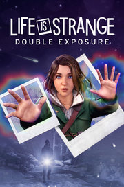

Life is Strange: Double Exposure
Detalles
 |
|
| Tiempo de juego | No Jugado |
| Última actividad | Nunca |
| Añadido | 6/26/2025 12:33:42 |
| Modificado | 6/26/2025 12:35:10 |
| Estado de finalización | Not Played |
| Librería | Playnite |
| Fuente | 6TB STORE |
| Plataforma | PC (Windows) |
| Fecha de lanzamiento | 10/29/2024 |
| Puntuación de la Comunidad | 67 |
| Puntuación de la Crítica | |
| Puntuación de usuario | |
| Género | Acción Aventura |
| Desarrollador | Deck Nine Games |
| Editor | Square Enix |
| Característica | Cloud Saves Compat. Total Con Mando Cromos De Logros De Préstamo Familiar Un Jugador |
| Enlaces | Punto de encuentro Discusiones Guías Noticias Página de la tienda PCGamingWiki Logros |
| Tag | Acción Ambientales Aventura Buena trama Cinematográficos Drama Elige tu propia aventura Emocionales Estilizados Finales múltiples Gran banda sonora Las elecciones importan LGBTQ+ Misterio Narrativos Protagonista femenina Romance Sobrenaturales Tercera persona Un jugador |
Descripción

Max Caulfield, la fotógrafa residente de la prestigiosa Universidad de Caledon, encuentra a su nueva mejor amiga, Safi, muerta en la nieve.
Ha sido asesinada.
Para salvarla, Max intenta rebobinar el tiempo, un poder que hace años que no usa. Esto no funciona, y en su lugar Max abre un portal a una línea temporal paralela en la que Safi sigue viva ¡y sigue corriendo peligro!
Max es consciente de que el asesino volverá a actuar, en ambas realidades.
Con su nuevo poder para cruzar entre dos líneas temporales, ¿conseguirá Max resolver y evitar el mismo asesinato?
UNA CHICA NORMAL, UN PODER PARANORMAL

Max se ve envuelta en la sobrenatural trama de un misterioso asesinato, ¡con más peligros que nunca!
EXPLORA DOS LÍNEAS TEMPORALES

Busca aliados e investiga sospechosos en dos realidades mientras dictas el curso de ambas líneas temporales mediante decisiones difíciles de olvidar.
UNA CARRERA CONTRARRELOJ
Un implacable inspector de policía no le quita ojo a Max, que con cada pista que descubre está más cerca de delatar al asesino de Safi. ¿Max aguantará lo suficiente para conseguir hacer lo imposible?DECIDE EL DESTINO DE CALEDON

Explora dos versiones de un concurrido campus universitario en invierno, a rebosar de pistas, secretos y decisiones difíciles.